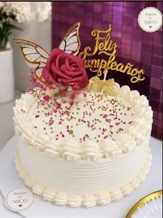
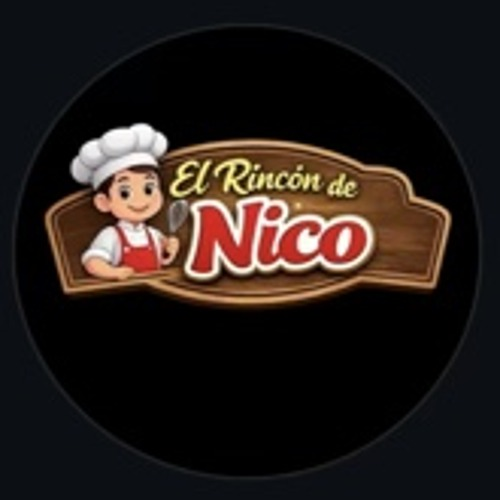
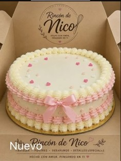
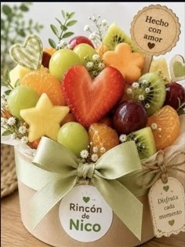
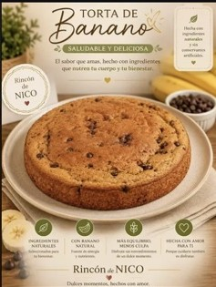

Tortas
Clásicas y personalizadas para tus fechas especiales.

El Rincón de NicoTortas, quimbolitos, desayunos y detalles preparados como en casa para convertir cada ocasión en un recuerdo delicioso.

Hecho con amor ♡Desde una torta para celebrar hasta un desayuno que sorprende.

Clásicas y personalizadas para tus fechas especiales.

Regalos preparados con cariño para alguien especial.

Tradición, sabor y cariño en cada bocado.
Chocolate · Vainilla · Tres Leches · Red Velvet, quimbolitos y más opciones según disponibilidad.
El Rincón de Nico es un emprendimiento ipialeño que nace desde el amor de un hogar, transformando recetas caseras en dulces recuerdos.
Cada pedido se prepara buscando que se vea especial, sepa delicioso y haga sonreír a quien lo recibe.
Calidad · Frescura · Amor en cada detalle.Escríbenos por WhatsApp para consultar diseños, sabores y disponibilidad.
Quiero hacer un pedido